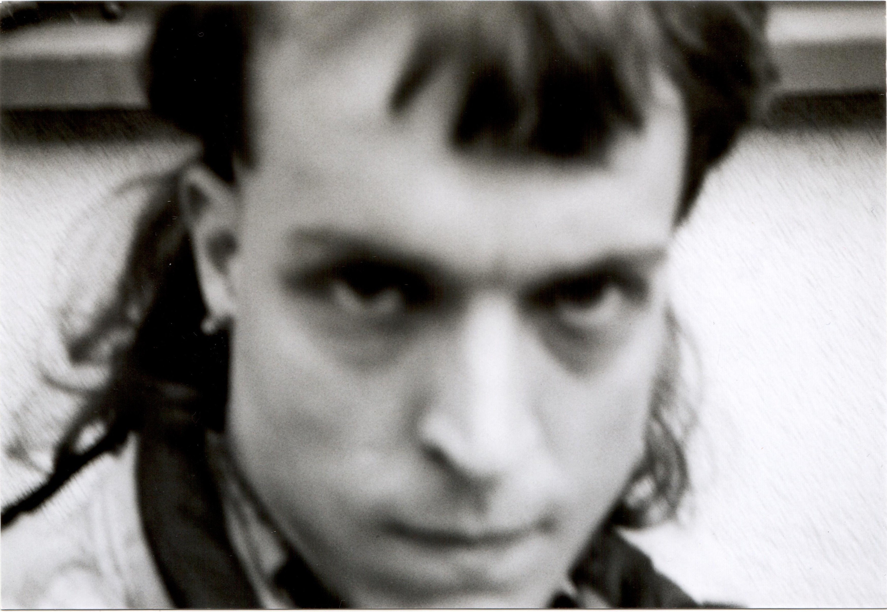
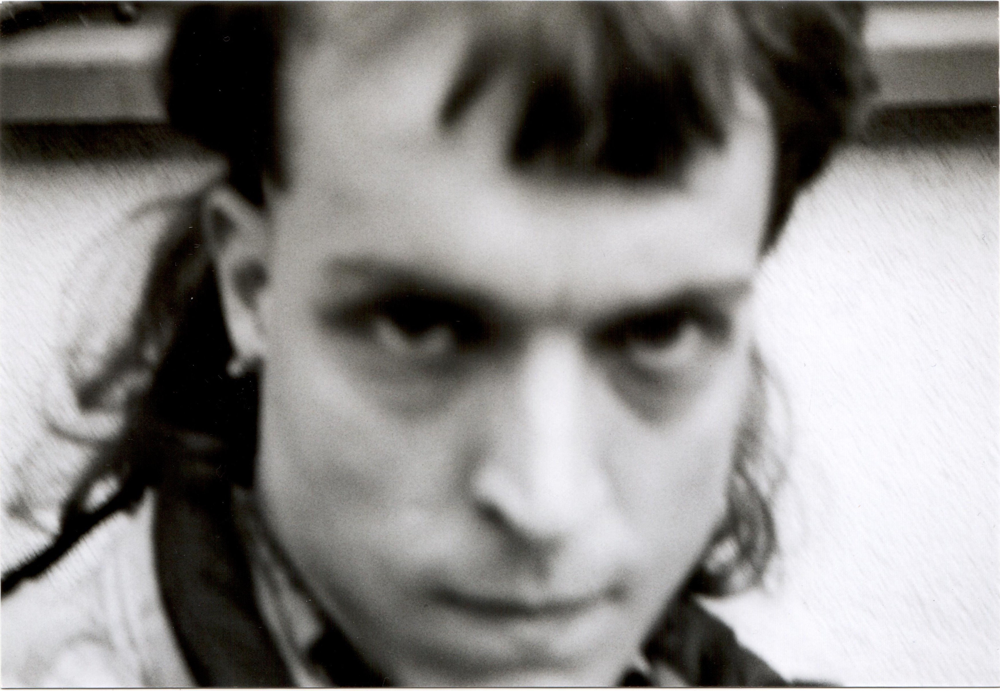
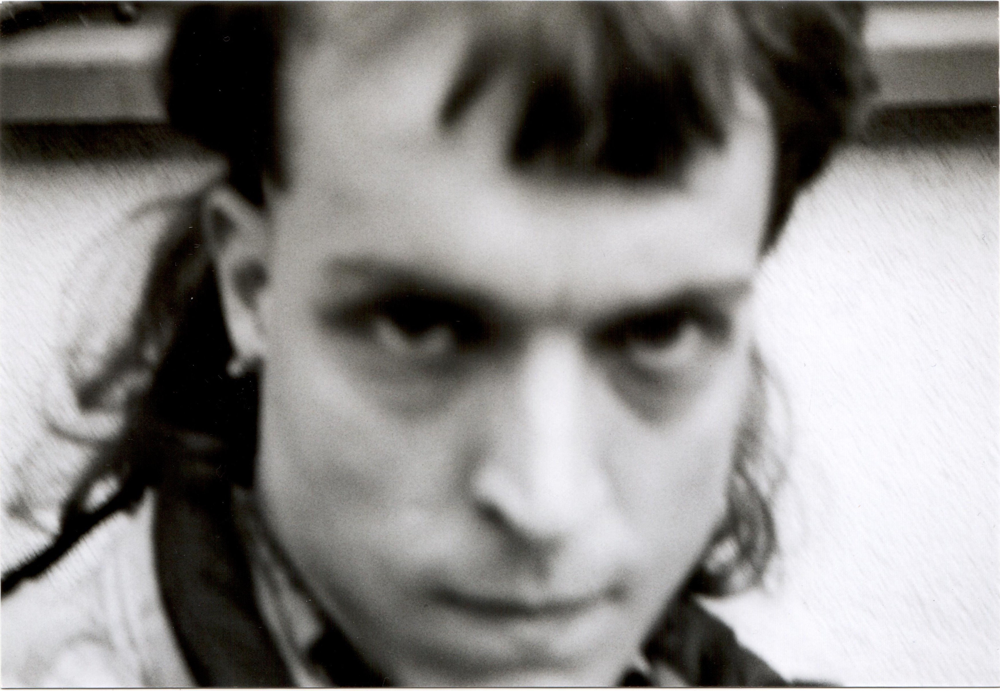

This artist's portfolio is a frenetic symphony of experimentation, a cosmic exploration of the infinite dimensions of mediums and styles. Their work is an enigmatic journey through a kaleidoscope of sensory experiences that will leave you questioning reality. Their creative process is a ritualistic performance, a hypnotic trance that leads them to uncharted territories of their mediums. They embrace the chaos and unpredictability of the process, weaving a tapestry of raw emotions and unfiltered expressions. Through their art, the artist traverses the intricacies of the human psyche ,casting light on the complexities of mental health. Their work is a provocative invitation to challenge conventional wisdom and to question the very fabric of our reality. For the artist, the journey is the destination, as they delve deep into the abyss of their own psyche, using their art to channel the voices that reside within. Each piece is a manifestation of the artist's internal universe, a fractal reflection of the chaos and beauty of their mind. By blending artificial intelligence with their unconventional use of materials, the artist seeks to create a fusion of human and machine, a cyborgian being that challenges the very concept of what it means to be human.
